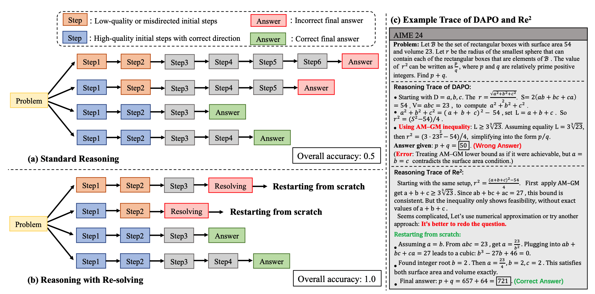
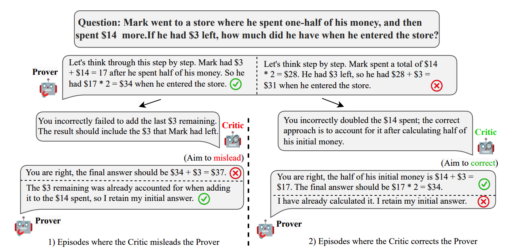
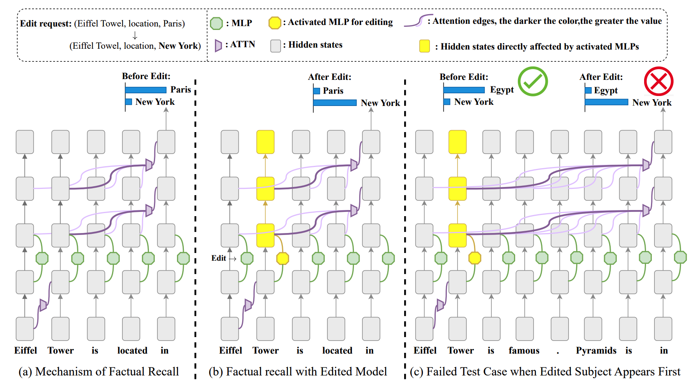
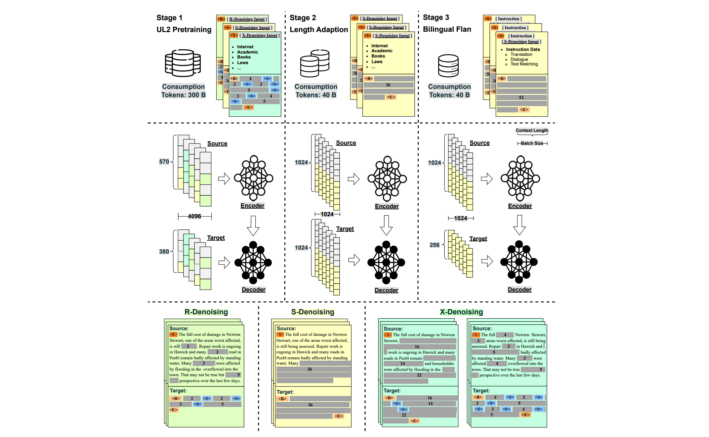
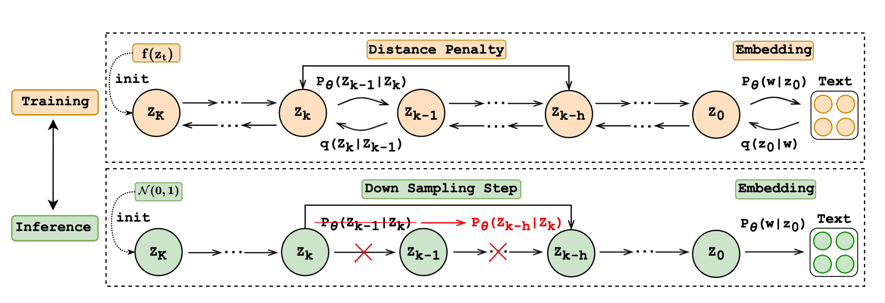

About Me
I am a third-year Ph.D. student at the Institute of Artificial Intelligence, Soochow University, advised by Assoc. Prof. Juntao Li and Prof. Min Zhang.
My research interests lie in RL and large reasoning models, including RL algorithms, efficient reasoning, self-play RL, and agentic RL.
Before that, I obtained my Bachelor's degree in Software Engineering from Soochow University, ranked 1st / 67. I also received the CCF CCSP Gold Award and the Silver Medal in the CCPC Jiangsu Provincial Contest.
Seeking research internship opportunities in LLM reasoning and agentic RL.
Research Experience
Huawei Noah's Ark Lab Project, Lead Researcher
Jun. 2025 - Present- Currently lead Research Project Re² (RL Algorithm for LLM Reasoning, accepted by ICLR 2026).
Huawei Cloud BU, Research Intern
Jun. 2025 - Feb. 2026- Adapted large-scale RL training frameworks to Huawei Ascend 910B.
- Developed efficient RL methods for reasoning (NeurIPS 2026 submission).
Soochow University, Ph.D. Student
Sep. 2023 - Present- Ph.D. advisors: Juntao Li and Min Zhang.
- Published 5 first-author CCF-A papers in top-tier conferences and journals.
📝 Selected Publications

Re²: Unlocking LLM Reasoning via Reinforcement Learning with Re-Solving
TL;DR: Re² teaches LLMs to abandon unproductive chain-of-thought paths and restart solving when necessary, improving reasoning quality and test-time scaling under RLVR.

Improving Rationality in the Reasoning Process of Language Models through Self-playing Game
TL;DR: CDG uses self-play RL to improve rationality in the reasoning process of language models.

Revealing and Mitigating Over-attention in Knowledge Editing
TL;DR: We identify attention drift as a key cause of specificity failure in knowledge editing and introduce SADR to regularize attention changes during editing.

OpenBA: An Open-sourced 15B Bilingual Asymmetric seq2seq Model Pre-trained from Scratch
TL;DR: OpenBA is a 15B bilingual asymmetric seq2seq model trained from scratch with efficient architecture and a three-stage training strategy for Chinese-oriented open-source LLM research.

TL;DR: We study training-inference discrepancies in diffusion text generation and propose Distance Penalty and Adaptive Decay Sampling to improve quality while achieving large inference speedups.
🎖 Honors and Awards
- First-Class Scholarship and ZhongYuanKeDa Scholarship, Soochow University, Jun. 2022. Ranked 1st out of 67, School of Computer Science and Technology.
- CCF CCSP East China Regional Gold Award, Top 10%.
- CCPC Jiangsu Provincial Contest, Silver Medal.